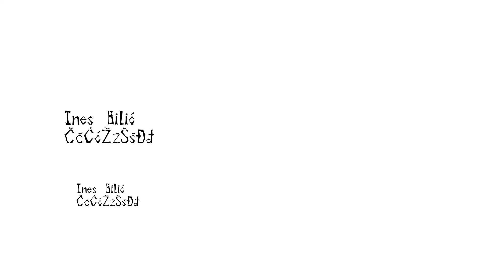
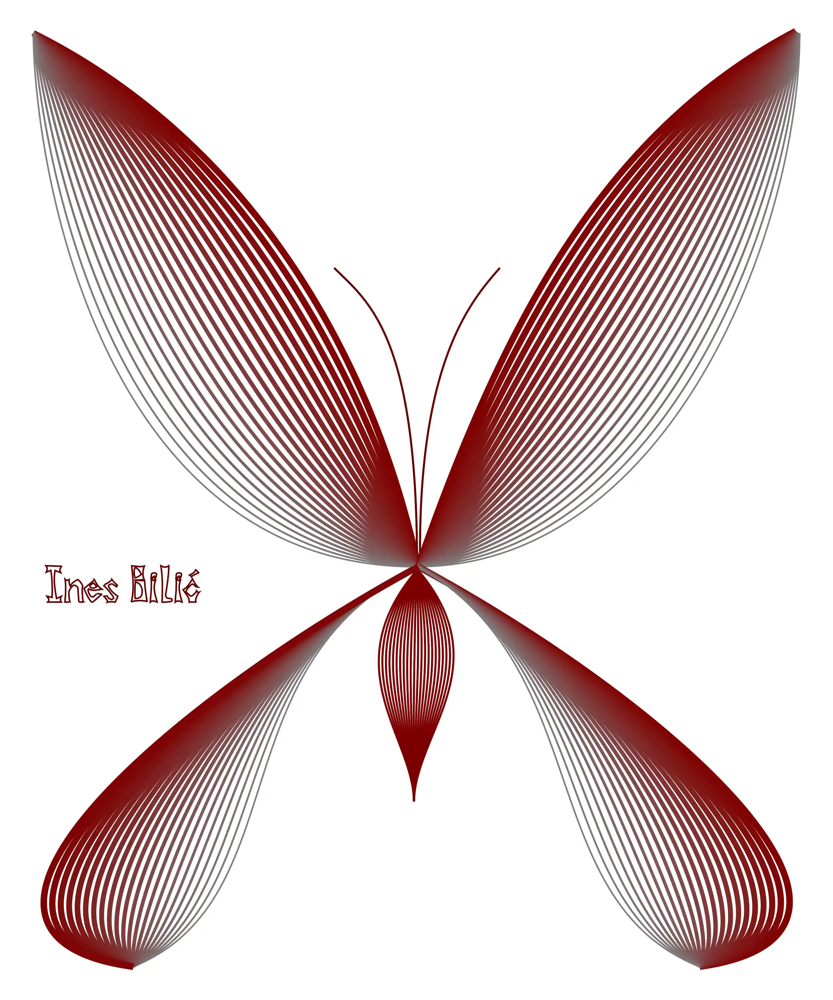
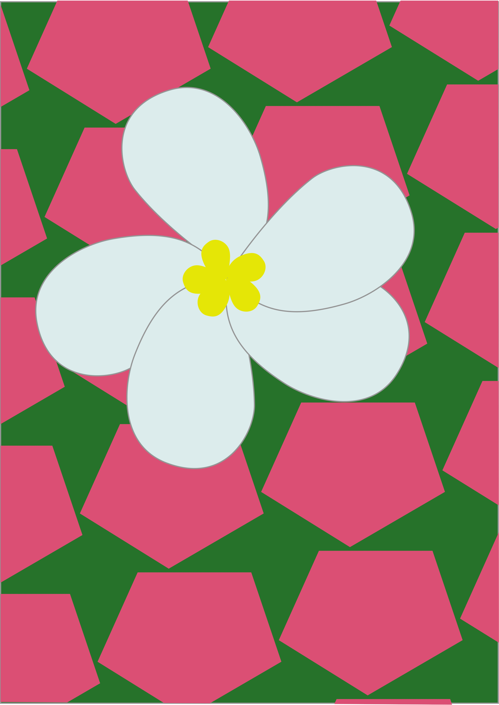
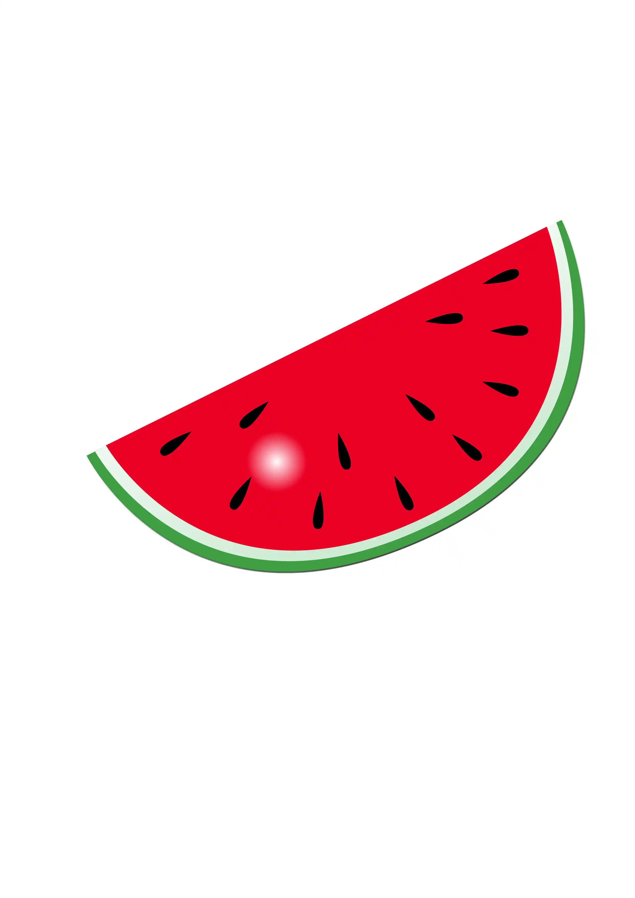
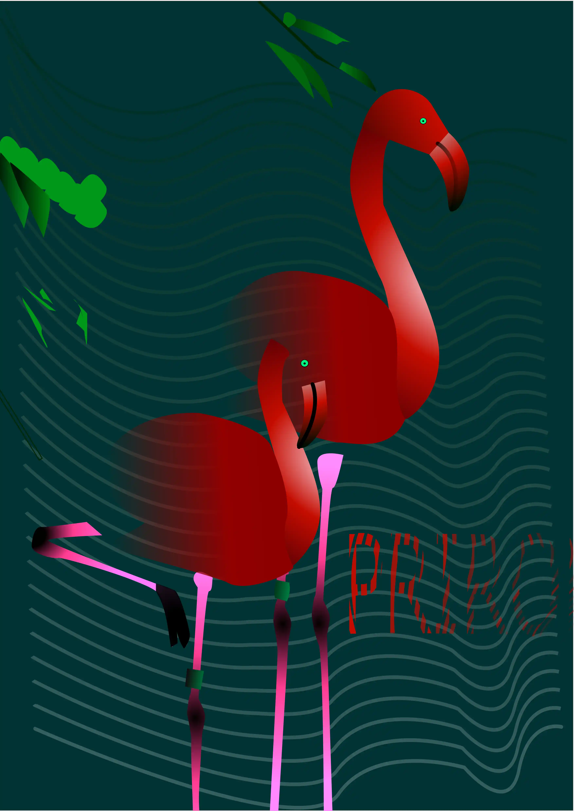
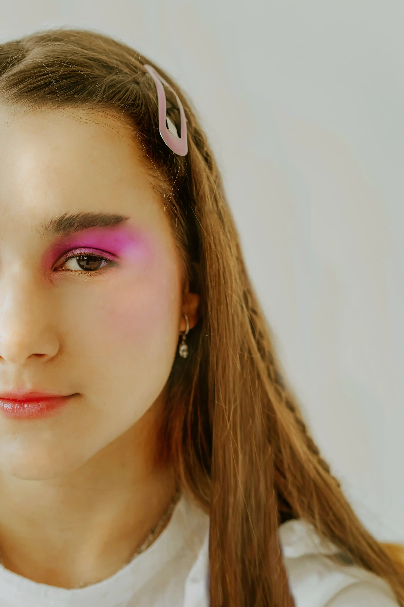
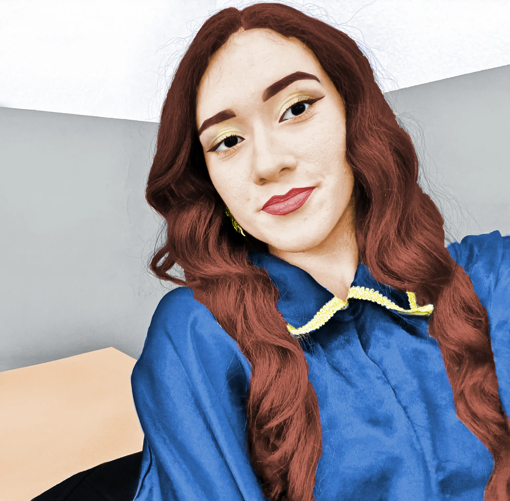
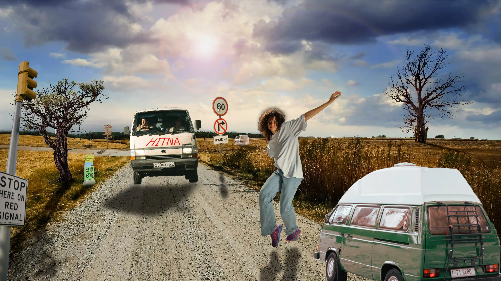
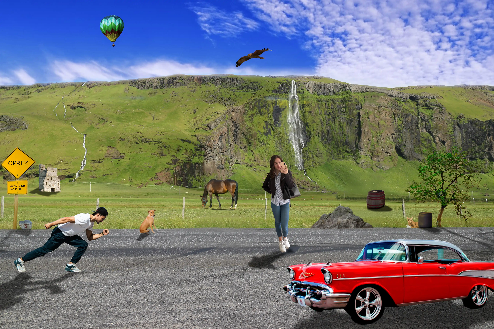

Uprvoj vježbi smo naučili izrađivati font
U drugoj vježbi smo počeli raditi sa Bazierovim krivuljama i izrađivati različite stvari sa njima.
U trećoj vježbi naučili smo raditi crteže preko slike pomoću raznih alatate smo koristili rotaciju, scale, transparenciju, multipliciranje oblika, definiranje uzoraka i mnoge druge stvari.
U četvrtoj vježbi obrađivali smo temu složenih objekata gdje nam je za primjer bila čaša te smo kasnije imali zadatak kreirati i vlastiti složeni objekt u kojem ćemo korisiti tehnike spajanja i izrezivanja objekata i primijeniti različite vrste gradijenata i transparencije, te ja sam izabrala da ću kreirati lubenicu.
U prvom projektnom zadatku imali smo primjenu svih tehnika što smo do sad bili radili a moja slika za rad bila je flamingo.
U petoj vježbi radili smo retuširanje slika popravljajući nedostatke kod slika.
U šestoj vježbi radili smo koloriranje gdje smo crno-bijelu sliku pretvarali u sliku u boji po vlastitoj želji. Sliku smo vlastitu radili u više nijansi.
Glavni cilj fotomontaže je kombiniranje više fotografija izrezivanjem dijelova različitih slika i spajanjem u jednu cjelinu. Pritom je najvažnije kvalitetno selektirati dijelove koje želimo izrezati kako bi se što bolje uklopili u finalnu sliku. U ovoj vježbi smo prošli kroz različite tehnike selektiranja jednostavnih i složenih oblika. Jednostavne tehnike selekcije uključuju alate kojima selektiramo poligone i oštre rubove objekata, a složenije tehnike selekcije podrazumijevaju selekciju putem kanala slike ili crtanje maski brush i eraser alatima u modu quick mask. Vježba se bavi i izradom i uklapanjem sjena objekata koje smo uvezli izrezivanjem i korekcijom boja kako bi se pojačao dojam realističnosti.
Kreirati sliku u Adobe Photoshopu ili GIMPu kao kompoziciju više fotografija koristeći tehnike retuširanja, fotomontaže i koloriranja.
U osmoj vježbi smo izrađivali gif.

U devetoj vježbi smo izradili svoj vlastiti video. Ja sam uzela primjer svoj dok sam bila na klizanju.
U zadnjoj vježbi smo izrađivali svoju vlastitu stranicu.
lik za vježbu